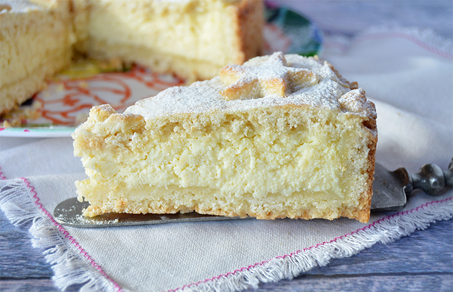

Para la masa, cremar la manteca con el azúcar más la ralladura, el huevo y la esencia.
Hacer una corona con la harina mezclada con el polvo de hornear y volcar el cremado en el centro. Acariciar con ambas manos integrando pero sin amasar para hacer un arenado.
Dividir en 2 partes (1/3 y 2/3).
Tomar los 2/3 y un molde desmontable de 24 cm y forrar base y bordes presionando con los dedos.
Para el relleno, en un bol, mezclar los ingredientes y rellenar.
Cubrir con el tercio restante y cocer al horno medio por 40 minutos.
Decorar con azúcar impalpable.